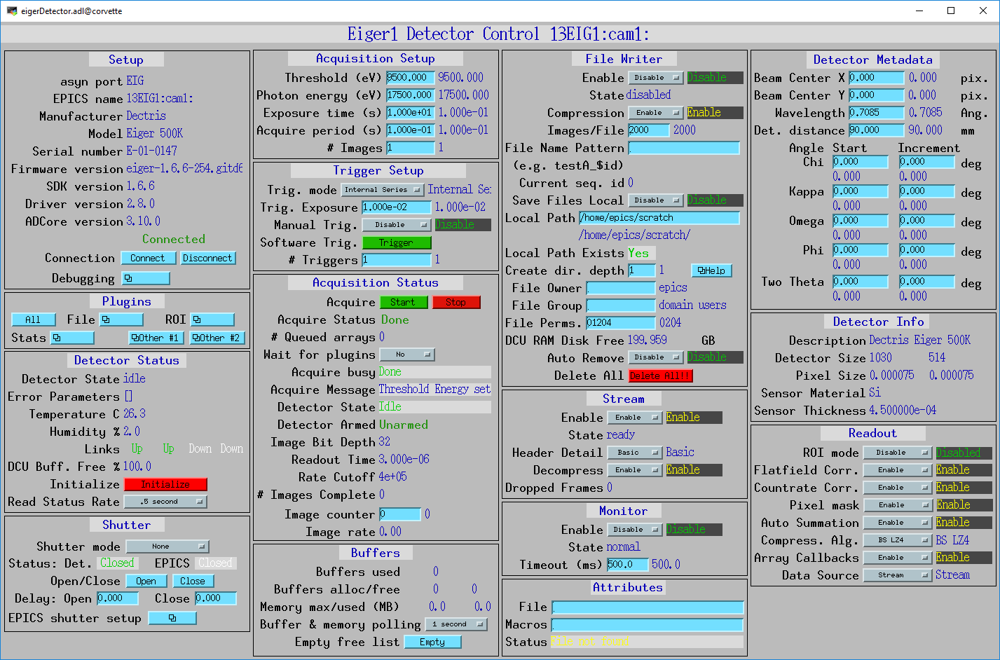
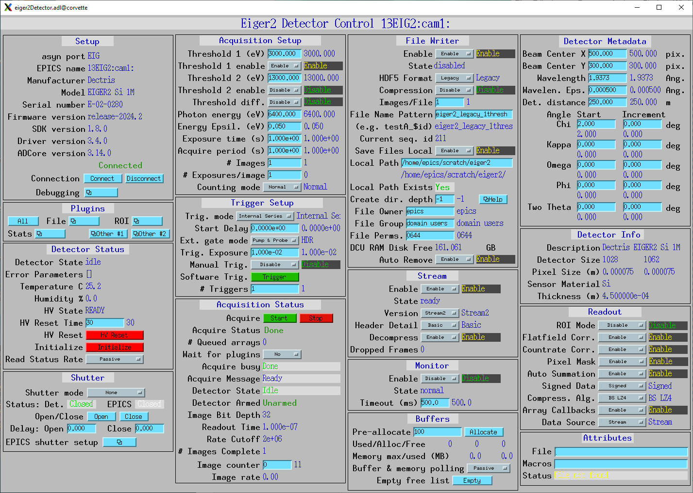

ADEiger
- author:
Bruno Martins, Diego Omitto, Mark Rivers
Introduction
This is an EPICS areaDetector driver for the Eiger and Eiger2 detectors from Dectris. It has been tested on the Eiger 500K, 1M, 4M and 16M with the firmware version 1.6.4+, and Eiger2 with firmware 2020.2. The driver communicates with the detector via its SIMPLON REST interface, so no library from Dectris is required. The images can pulled from the detector as HDF5 files, as a ZeroMQ stream or both. The files can be both saved to disk and passed to the areaDetector pipeline at the same time.
All trigger modes are supported, although Internal Enable mode seems to not be working properly. See Known Issues.
This driver inherits from ADDriver. It implements many of the parameters in asynNDArrayDriver and in ADDriver. It also implements a number of parameters that are specific to the Eiger detector. The eigerDetector class describes this class in detail.
This document does not attempt to explain the meaning of the Eiger- specific parameters, as they are explained in the SIMPLON API Reference and in the EIGER Detector Manual documents from Dectris. Sometimes it does, however, refer to those parameters as they are named in Dectris’ documentation.
The SIMPLON API provides ways to query parameter limits, valid values for enums, error conditions, etc. The driver will clamp values to their minimum or maximum value if they are outside the acceptable range. Setting a parameter will immediately push its value to the detector.
This driver was built upon a multithreaded architecture. A combination of threads is used to simultaneously pull files from the detector, save them to disk and parse them into NDArrays. A dedicated thread is used to receive images in a ZeroMQ stream.
A few Eiger parameters are set at IOC initialization time and are expected to not change. Namely:
detector/config/auto_summation = true
filewriter/config/image_nr_start = 1
monitor/config/buffer_size = 1
Accessing New Parameters
Some parameters are not relevant to the driver operation and as such are not exposed initially by the driver as PVs. However, there is a mechanism to access other parameters not created automatically by the driver by simply instantiating new records with the appropriate drvInfo string. Some of the PVs are created this way. For example, the PV XPixelSize_RBV has the following drvInfo:
EIG_DCD_x_pixel_size
For those parameters, the first four characters must be EIG_. Then the fifth character must be one of:
D: Detector subsystem
M: Monitor subsystem
F: FileWriter subsystem
S: Stream subsystem
The sixth character determines if the parameter is a configuration or a status parameter:
C: Configuration
S: Status
The seventh character determines which asyn parameter type to use:
I: Integer (asynParamInt32)
D: Double (asynParamFloat64)
S: String (asynParamOctet)
The eighth character must be a ‘_’, and the remaining characters are the parameter’s name according to the SIMPLON API Manual. Hence, for this example, this PV will be accessing the parameter:
detector/api/<version>/config/x_pixel_size
Trigger Modes
There are six trigger modes available:
Internal Series: one internal trigger pulse generates N images
Internal Enable: one internal trigger pulse generates one image
External Series: one external trigger pulse generates N images
External Enable: one external trigger pulse generates one image
Continuous: same as internal series, but automatically restarts after series
- External Gate: This mode is used only with new firmware on the Eiger2
which has 2 counters per pixel. The behavior depend on the setting the ExtGateMode PV.
The total number of images generated by Internal and External Series modes is given by the product of the NumImages and NumTriggers PVs (nimages and ntriggers in Dectris terminology).
On both Internal Enable and External Enable modes the total number of images generated is given solely by the NumTriggers PV (ntriggers). NumImages is set to 1 temporarily during the acquisition.
Triggers for Internal Enable mode are sent by processing the Trigger PV. The exposure for each individual image is given by the TriggerExposure PV and can change between triggers in the same acquisition. This mode is experimental as of firmware 1.5.0. See Known Issues.
Manual Trigger
On Internal Series and Internal Enable modes, if the ManualTrigger PV is set to Yes, the triggers are not auto generated by the driver. Instead, they are sent by processing the Trigger PV. On Internal Enable mode the trigger carries an exposure value that can change for each trigger, which is set by the TriggerExposure PV. Note that the Internal Enable mode is experimental as of firmware 1.5.0, see Known Issues.
Data Acquisition
Data generated by the Eiger can be pulled from the detector in a number of ways. The detector has three modules (in Dectris’ terminology) that make the results of the acquisition available in different ways. The FileWriter module writes the generated images to the detector disk as HDF5 files that consist of a master (header) file and a number of data files. The Stream module makes the images available as soon as they are captured as a ZeroMQ stream. The Monitor module produces TIFF images every so often to monitor how a long acquisition is progressing.
Data from the FileWriter or from the Stream mode can be parsed into NDArrays for the areaDetector pipeline. The actual source is selected with the DataSource PV. If DataSource is set to None, however, no data will be sent to the areaDetector pipeline but the detector will still be controllable via the areaDetector driver; third-party clients can then pull files or listen to the ZeroMQ stream independently of this driver.
Using FileWriter
The FileWriter module is activated when FWEnable is set to Yes. Files generated by the FileWriter have names according to the FWNamePattern PV. The default pattern is “series_$id”, where $id is replaced by the Sequence ID of the acquisition. A master file is generated as soon as the detector is successfully armed. A number of data files follow. The number of data files generated depends on the total number of images of the acquisition and the FWNFilesPerImage PV.
For example, if TriggerMode is External Enable, NumImages is 60, NumTriggers is 2, FWNImagesPerFile is 100, Sequence ID for the acquisition is 1 and FWNamePattern is “series_$id”, a total of three files will be generated:
series_1_master.h5
series_1_data_000001.h5 (with 100 images)
series_1_data_000002.h5 (with 20 images)
The generated files will be downloaded either if DataSource is set to FileWriter or if SaveFiles is set to Yes. Files are downloaded as soon as they are available. To determine if a file is available the driver polls the detector at a nominal rate of 10Hz. While a file is being processed the next file available is downloaded in parallel. All files will remain on the detector disk unless FWAutoRemove is set to Yes.
When saving files to disk (SaveFiles = Yes) it is possible to set the file’s owner, its group and its access permissions with FileOwner, FileOwnerGrp and FilePerms PVs. To be able to set arbitrary owners the IOC executable requires CAP_SETUID and CAP_SETGID capabilities, which can be given with the command:
sudo setcap cap_setuid,cap_setgid+ep eigerDetectorApp
All files on the detector disk can be deleted at once by processing the FWClear PV. This is only available with the Eiger1 and Simplon API version 1.6.0.
If the last data file of a series won’t be full (e.g. series_1_data_000002.h5 with 20 images) then it will only appear on the detector disk after a disarm command (issued when the acquisition is stopped), which flushes the FileWriter buffer.
Using Stream
The Stream module is activated when StreamEnable is set to Yes. Data will then be available on the detector’s tcp port 9999 as a ZMQ_PUSH socket. If DataSource is set to Stream, this driver opens a corresponding ZMQ_PULL socket and parses the incoming data as NDArrays. Otherwise a third-party client can listen on that socket for data. The format of the packets is specified in the Eiger SIMPLON API documentation.
Using Monitor
The Monitor module is activated when MonitorEnable is set to Yes. Data will be available whenever the monitor module buffer is full (has one image available). This driver waits MonitorTimeout ms for data to be available. There is a rate-limit of 10Hz. Once downloaded, the TIFF image is parsed into areaDetector’s NDArray on NDArrayAddr 1 (therefore, an independent NDArray stream).
Crystallography Parameters
A few parameters are available as metadata for the acquisition. These values are stored on the master file and sent as metadata in ZeroMQ stream, but otherwise don’t affect the acquisition, with the exception of the Wavelength parameter, which sets Photon Energy accordingly.
Implementation of standard driver parameters
The following table describes how the Eiger driver implements some of the standard driver parameters defined in asynNDArrayDriver.h and ADDriver.h, ADBase.template and NDFile.template
EPICS record name |
Eiger Parameter |
Description |
|---|---|---|
$(P)$(R)TriggerMode, $(P)$(R)TriggerMode_RBV |
detector/config/trigger_mode |
Sets the trigger mode for the detector. Options are:
|
$(P)$(R)NumImages, $(P)$(R)NumImages_RBV |
detector/config/nimages |
Sets the number of images to take per trigger when on Internal Series or External Series mode. |
$(P)$(R)NumExposures, $(P)$(R)NumExposures_RBV |
detector/config/nexpi |
Sets the number of exposures per image in External Gate trigger mode. |
$(P)$(R)AcquireTime, $(P)$(R)AcquireTime_RBV |
detector/config/count_time |
Sets the parameter “count_time”, which is the exposure time for a single image in Internal Series or External Series mode. |
$(P)$(R)AcquirePeriod, $(P)$(R)AcquirePeriod_RBV |
detector/config/frame_time |
Sets the parameter “frame_time”, which directly affects the frame rate of the detector. The resulting frame rate will be 1/AcquirePeriod. |
$(P)$(R)DataType_RBV |
N.A |
The data type of the image data. This depends on the Eiger model, the AcquirePeriod (frame rate) and the AcquireTime (exposure time). At long exposure times it is UInt32, at intermediate frame rates it is UInt16, and at very high frame rates it is UInt8. For example, on an Eiger2 500K:
|
$(P)$(R)TemperatureActual |
detector/status/board_000/th0_temp |
Reads the actual temperature of the detector. |
$(P)$(R)MaxSizeX_RBV |
N.A |
Detector sensor size in the X direction. |
$(P)$(R)MaxSizeY_RBV |
N.A |
Detector sensor size in the Y direction. |
$(P)$(R)ArraySizeX_RBV |
detector/config/x_pixels_in_detector |
Current detector sensor size in the X direction. This can change depending on the ROI Mode selected. |
$(P)$(R)ArraySizeY_RBV |
detector/config/y_pixels_in_detector |
Current detector sensor size in the Y direction. This can change depending on the ROI Mode selected. |
$(P)$(R)Manufacturer_RBV, $(P)$(R)Model_RBV |
detector/config/description |
Reads the detector manufacturer (Dectris) and model (Eiger xx M). |
$(P)$(R)SerialNumber_RBV |
detector/config/detector_number |
Detector serial number |
$(P)$(R)FirmwareVersion_RBV |
detector/config/eiger_fw_version |
Detector firmware version |
$(P)$(R)SDKVersion_RBV |
detector/api/version |
Simplon API version |
$(P)$(R)DriverVersion_RBV |
N.A |
This driver’s version |
Eiger specific parameters
The Eiger driver implements the following parameters in addition to those in asynNDArrayDriver.h and ADDriver.h. Most records are in eigerBase.template, and are common to both the Eiger1 and Eiger2. The records specific to the Eiger1 are in eiger1.template, and those specific to the Eiger2 are in eiger2.template. exist on the Eiger1, and some only on the Eiger2. This is noted in the tables.
Detector Information
Eiger Parameter |
Description |
EPICS record name |
EPICS record type |
|---|---|---|---|
detector/config/description |
Detector’s manufacturer and model |
Description_RBV |
stringin |
detector/config/x_pixel_size |
Detector’s pixel size in the X direction, in meters |
XPixelSize_RBV |
ai |
detector/config/y_pixel_size |
Detector’s pixel size in the Y direction, in meters |
YPixelSize_RBV |
ai |
detector/config/sensor_material |
Detector’s sensor material |
SensorMaterial_RBV |
stringin |
detector/config/sensor_thickness |
Detector’s sensor thickness, in meters |
SensorThickness_RBV |
ai |
detector/config/detector_readout_time |
Detector’s readout time (dead time) between frames. Changes with different Threshold Energies. |
DeadTime_RBV |
ai |
Detector Status
Eiger Parameter |
Description |
EPICS record name |
EPICS record type |
|---|---|---|---|
N.A. |
Initializes the detector DCU. This command takes many seconds. |
Initialize |
busy |
detector/status/state |
State of the detector |
State_RBV |
stringin |
detector/status/error |
List of parameters causing an error state |
Error_RBV |
stringin |
detector/status/board_000/th0_temp |
Temperature of the first module |
Temp0_RBV |
ai |
detector/status/board_000/th0_humidity |
Humidity of the first module |
Humid0_RBV |
ai |
detector/status/link_0, detector/status/link_1, detector/status/link_2, detector/status/link_3 |
Status of the four links between the detector server and the head. Eiger1 only. |
Link0_RBV, Link1_RBV, Link2_RBV, Link3_RBV |
bi |
detector/status/builder/dcu_buffer_free |
Percentage of the detector’s internal buffer that is free. Low values may indicate a problem. Eiger1 only. |
DCUBufferFree_RBV |
ai |
N.A. |
High voltage reset time. Eiger2 only. |
HVResetTime, HVResetTime_RBV |
ao, ai |
N.A. |
High voltage reset command. Turns off high voltage for HVResetTime and then turns it back on. Eiger2 only. |
HVReset |
bo |
detector/status/high_voltage/state |
High voltage state. State of the high voltage. Eiger2 only. |
HVState_RBV |
stringin |
Acquisition Setup
Eiger Parameter |
Description |
EPICS record name |
EPICS record type |
|---|---|---|---|
detector/config/threshold_energy |
Energy threshold 1 for the acquisition. This is the only threshold on the Eiger1. |
Threshold, Threshold_RBV |
ao, ai |
detector/config/threshold/1/mode |
Enable or disable threshold 1. Eiger2 only. |
Threshold1Enable, Threshold1Enable_RBV |
bo, bi |
detector/config/threshold/2/energy |
Energy threshold 2 for the acquisition. Eiger2 only. |
Threshold2, Threshold2_RBV |
ao, ai |
detector/config/threshold/2/mode |
Enable or disable threshold 2. Eiger2 only. |
Threshold2Enable, Threshold2Enable_RBV |
bo, bi |
detector/config/threshold/difference/mode |
Enable or disable difference mode, where the output image is threshold1-threshold2. Eiger2 only. |
ThresholdDiffEnable, ThresholdDiffEnable_RBV |
bo, bi |
detector/config/photon_energy |
Photon energy for the acquisition |
PhotonEnergy, PhotonEnergy_RBV |
ao, ai |
detector/config/counting_mode |
Counting mode, “Normal” or “Retrigger”. Eiger2 only. |
CountingMode, CountingMode_RBV |
bo, bi |
Trigger Setup
Eiger Parameter |
Description |
EPICS record name |
EPICS record type |
|---|---|---|---|
detector/config/extg_mode |
Mode to be used when TriggerMode=External Gate. Choices are “Pump & Probe” and “HDR”. Eiger2 with 2021 firmware only. |
ExtGateMode, ExtGateMode_RBV |
mbbo, mbbi |
detector/command/trigger |
Software trigger to be used on modes Internal Series and Internal Enable when ManualTrigger is set |
Trigger |
ao |
N.A. |
Exposure to be used with the triggers on the Internal Enable trigger mode |
TriggerExposure, TriggerExposure_RBV |
ao, ai |
detector/config/ntrigger |
Number of triggers for the acquisition |
NumTriggers, NumTriggers_RBV |
ao, ai |
N.A. |
On Internal Series and Internal Enable modes, controls whether triggers will be issued automatically (0) or only via the Trigger PV (1). |
ManualTrigger, ManualTrigger_RBV |
bo, bi |
detector/config/trigger_start_delay |
Delay time in second after receipt of trigger signal before taking action. Eiger2 only. |
TriggerStartDelay, TriggerStartDelay_RBV |
ao, ai |
Readout Setup
Eiger Parameter |
Description |
EPICS record name |
EPICS record type |
|---|---|---|---|
detector/config/roi_mode |
|
ROIMode, ROIMode_RBV |
mbbo, mbbi |
detector/config/flatfield_correction_applied |
Controls whether the flatfield correction should be applied |
FlatfieldApplied, FlatfieldApplied_RBV |
bo, bi |
detector/config/countrate_correction_applied |
Controls whether the count rate correction should be applied |
CountrateCorrApplied, CountrateCorrApplied_RBV |
bo, bi |
detector/config/pixel_mask_applied |
Controls whether the pixel mask should be applied |
PixelMaskApplied, PixelMaskApplied_RBV |
bo, bi |
detector/config/auto_summation |
Controls whether autosummation should be done. |
AutoSummation, AutoSummation_RBV |
bo, bi |
detector/config/compression |
The selected algorithm will always be used on the Stream ZMQ interface. It will also be used for HDF5 files written by the FileWriter interface if FWCompression=Enabled. |
CompressionAlgo, CompressionAlgo_RBV |
mbbo, mbbi |
N.A. |
|
DataSource, DataSource_RBV |
mbbo, mbbi |
Acquisition Status
Eiger Parameter |
Description |
EPICS record name |
EPICS record type |
|---|---|---|---|
N.A. |
Armed state of the detector |
Armed |
bi |
detector/config/bit_depth_image |
The bit depth of the image data. This depends on the Eiger model, the AcquirePeriod (frame rate) and the AcquireTime (exposure time). At long exposure times it is 32, at intermediate frame rates it is 16, and at very high frame rates it is 8. For example, on an Eiger2 500K:
|
$(P)$(R)BitDepthImage_RBV |
longin |
detector/config/countrate_correction_count_cutoff |
Number of counts after which the detector will cutoff due to the count rate correction. |
CountCutoff_RBV |
ai |
FileWriter Interface
Eiger Parameter |
Description |
EPICS record name |
EPICS record type |
|---|---|---|---|
filewriter/config/mode |
Enables or disables the FileWriter module |
FWEnable, FWEnable_RBV |
bo, bi |
filewriter/status/state |
State of the FileWriter module |
FWState_RBV |
stringin |
filewriter/config/compression_enabled |
Enables or disables LZ4 or BSLZ4 compression for HDF5 files written by the DCU |
FWCompression, FWCompression_RBV |
bo, bi |
filewriter/config/nimages_per_file |
Number of images per HDF5 data file |
FWNImgsPerFile, FWNImgsPerFile_RBV |
ao, ai |
filewriter/config/name_patttern |
Name pattern for the generated HDF5 files. The pattern can be anything, but it must contain the string ‘$id’ in it. This string is replaced with the current sequence id of the acquisition. The default is: “series_$id”, which would generate the files: * series_1_master.h5
* series_1_data_000001.h5
* series_1_data_000002.h5
* ...
For the sequence id 1. If ‘$id’ is omitted, files might get overwritten on the server, because then every acquisition would generate files with the same name |
FWNamePattern, FWNamePattern_RBV |
stringout, stringin |
N.A. |
Sequence ID of the current acquisition |
SequenceId |
ai |
N.A. |
Controls whether acquired files should be saved locally to disk |
SaveFiles, SaveFiles_RBV |
bo, bi |
N.A. |
Controls the owner of the file saved to disk. Requires the IOC to have the CAP_SETUID capability. |
FileOwner, FileOwner_RBV |
stringout, stringin |
N.A. |
Controls the owner group of the file saved to disk. Requires the IOC to have the CAP_SETGID capability. |
FileOwnerGrp, FileOwnerGrp_RBV |
stringout, stringin |
N.A. |
Controls the permissions for the files saved to disk. Normal Linux octal bitmask format, for Owner/Group/World, e.g. 0666 is r+w owner, group, and world. |
FilePerms |
ao |
filewriter/status/buffer_free |
Free space on detector disk. |
FWFree_RBV |
ai |
N.A. |
Controls whether downloaded files should be removed from the detector disk |
FWAutoRemove, FWAutoRemove_RBV |
bo, bi |
filewriter/config/clear |
Writing to this PV clears all files on the detector server disk. Eiger1 only. |
FWClear |
ao |
Stream Interface
Eiger Parameter |
Description |
EPICS record name |
EPICS record type |
|---|---|---|---|
stream/config/mode |
Enables or disables the Stream module |
StreamEnable, StreamEnable_RBV |
bo, bi |
stream/status/state |
State of the Stream module |
StreamState_RBV |
stringin |
N.A. |
Controls whether the NDArrays from the Stream interface are decompressed (Yes) or compressed (No) |
StreamDecompress, StreamDecompress_RBV |
bo, bi |
stream/config/header_detail |
|
StreamHdrDetail, StreamHdrDetail_RBV |
mbbo, mbbi |
stream/config/header_appendix |
Sets the text to be appended to the Stream API headers |
StreamHdrAppendix |
waveform |
stream/config/image_appendix |
Sets the text to be appended to the Stream API images |
StreamImgAppendix |
waveform |
stream/status/dropped |
Indicates how many images were dropped in the last acquisition |
StreamDropped_RBV |
ai |
Monitor Interface
Eiger Parameter |
Description |
EPICS record name |
EPICS record type |
|---|---|---|---|
monitor/config/mode |
Enables or disables the Monitor module |
MonitorEnable, MonitorEnable_RBV |
bo, bi |
monitor/status/state |
State of the Monitor module |
MonitorState_RBV |
stringin |
N.A. |
Timeout for queries on the Monitor interface for new images |
MonitorTimeout, MonitorTimeout_RBV |
ao, ai |
Acquisition Metadata
Eiger Parameter |
Description |
EPICS record name |
EPICS record type |
|---|---|---|---|
detector/config/beam_center_x |
X position of the beam |
BeamX, BeamX_RBV |
ao, ai |
detector/config/beam_center_y |
Y position of the beam |
BeamY, BeamY_RBV |
ao, ai |
detector/config/detector_distance |
Detector distance |
DetDist, DetDist_RBV |
ao, ai |
detector/config/wavelength |
Wavelength of the beam. This parameter is automatically changed whenever the PhotonEnergy changes |
Wavelength, Wavelength_RBV |
ao, ai |
Detector Metadata
Eiger Parameter |
Description |
EPICS record name |
EPICS record type |
|---|---|---|---|
detector/config/chi_start |
Start value of the Chi angle |
ChiStart, ChiStart_RBV |
ao, ai |
detector/config/chi_increment |
Chi angle increment per frame |
ChiIncr, ChiIncr_RBV |
ao, ai |
detector/config/kappa_start |
Start value of the Kappa angle |
KappaStart, KappaStart_RBV |
ao, ai |
detector/config/kappa_increment |
Kappa angle increment per frame |
KappaIncr, KappaIncr_RBV |
ao, ai |
detector/config/omega_start |
Start value of the Omega angle |
OmegaStart, OmegaStart_RBV |
ao, ai |
detector/config/omega_increment |
Omega angle increment per frame |
OmegaIncr, OmegaIncr_RBV |
ao, ai |
detector/config/phi_start |
Start value of the Phi angle |
PhiStart, PhiStart_RBV |
ao, ai |
detector/config/phi_increment |
Phi angle increment per frame |
PhiIncr, PhiIncr_RBV |
ao, ai |
detector/config/two_theta_start |
Start value of the TwoTheta angle |
TwoThetaStart, TwoThetaStart_RBV |
ao, ai |
detector/config/two_theta_increment |
TwoTheta angle increment per frame |
TwoThetaIncr, TwoThetaIncr_RBV |
ao, ai |
Minimum change allowed
Eiger Parameter |
Description |
EPICS record name |
EPICS record type |
|---|---|---|---|
N.A. |
Minimum amount of change allowed to Wavelength, in Angstroms |
WavelengthEps, WavelengthEps_RBV |
ao, ai |
N.A. |
Minimum amount of change allowed to PhotonEnergy, Threshold and Threshold2, in eV |
EnergyEps, EnergyEps_RBV |
ao, ai |
Unsupported standard driver parameters
All standard parameters not mentioned in this document are not supported.
Configuration
The Eiger driver is created with the eigerDetectorConfig command, either from C/C++ or from the EPICS IOC shell.:
int eigerDetectorConfig(const char *portName, const char *hostname,
int maxBuffers, size_t maxMemory, int priority, int stackSize)
For details on the meaning of the parameters to this function refer to the detailed documentation on the eigerDetectorConfig function in the eigerDetector and in the documentation for the constructor for the eigerDetector class
There an example IOC boot directory and startup script provided with areaDetector.
medm screens
The following shows the medm screens that are used to control the Eiger and Eiger2 detectors. Note that the general purpose screen ADBase.adl can be used, but it exposes a few PVs that are not applicable to the Eiger, and lacks many PVs that are important for the Eiger.
eigerDetector.adl is the screen used to control the Eiger1 detector.
{kind=link}
eiger2Detector.adl is the screen used to control the Eiger2 detector.
{kind=link}
Using 2 energy thresholds
The Eiger2 detector supports 2 energy thresholds. Threshold1 must always be lower in energy than threshold2. These can be independently enabled, but at least one of the thresholds must be enabled. If both are enabled then enabling ThresholdDiffEnable will result in the image being the difference of threshold1 - threshold2.
The following images were acquired with two radioactive sources placed in front of the detector. On the left is Fe55 which generates Mn Ka x-rays at about 5.9 keV. On the right is Cd109 which generates Ag Ka x-rays at about 23 keV. Threshold1 was set to 3.0 keV, about 50% of the Fe55 x-ray energy. Threshold2 was set to 11 keV, about 50% of the Cd109 x-ray energy.
This image was acquired with Threshold1Enable=Enable and Threshold2Enable=Disable. Note that both sources are detected because both are above 3 keV.
{kind=link}
This image was acquired with Threshold1Enable=Disable and Threshold2Enable=Enable. Note that the Fe55 source is not detected because it is below 11 keV.
{kind=link}
This image was acquired with Threshold1Enable=Enable and Threshold2Enable=Enable, and ThresholdDiffEnable=Enable. Note that only the Fe55 source is detected because any events that were above both 3 keV and 11 keV are discarded.
{kind=link}
Known Issues
Changing the Photon Energy
Changing the Photon Energy is a potentially slow operation, depending on the detector size. On the 16M it takes around ten seconds. Other parameters also take this long because they also affect the Photon Energy, namely Threshold Energy and Wavelength. The StatusMessage PV indicates when setting any of these parameters start and finish.
In order to prevent minute or accidental changes to Energy and Wavelength from taking too long to be applied, their values are only updated if the difference between the desired and current value is greater than some configurable parameters. Specifically, changes in Wavelength only take effect if they result in a difference greater than WavelengthEps (default: 0.0005 Angstroms). Similarly, changes to PhotonEnergy, Threshold and Threshold2 only take effect if they are greater than EnergyEps (default: 0.05 eV).
Status Parameters Polling
A few status parameters are read every time the ReadStatus PV is processed. A high rate polling causes issues, sometimes causing the detector to hang when, in conjunction, a parameter is set to an invalid value.
Internal Enable Mode
The Internal Enable mode is marked as experimental by Dectris. At the moment it is very flaky (firmware 1.5.0) and often doesn’t generate all the files it is supposed to.